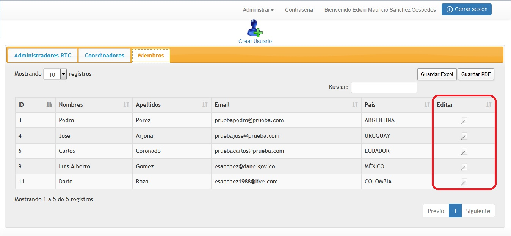
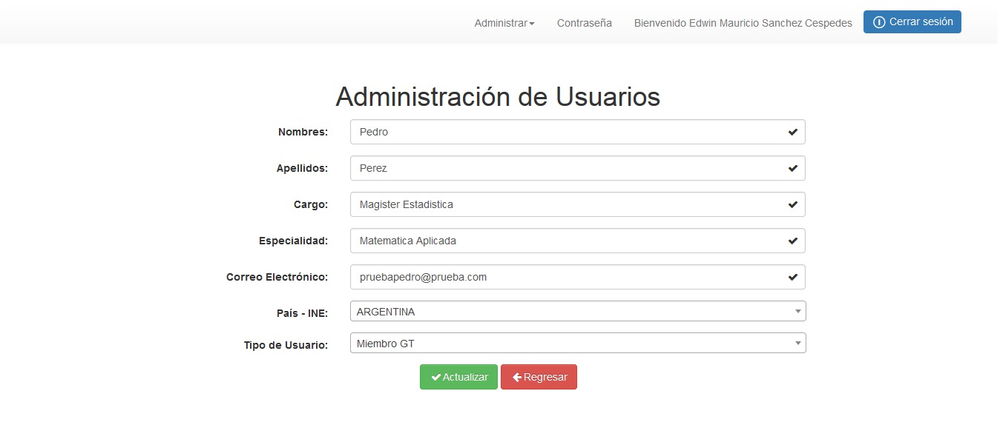

En la parte final de cada listado existe una opción que permite modificar los datos de los usuarios ya registrados.

Al hacer clic sobre la opción, encontrara un formulario con todos los datos del usuario el cual selecciono, a partir de este momento, el administrador podrá modificar cada uno de los datos.

Al finalizar las modificaciones, el administrador debe hacer clic sobre el botón Actualizar, para que los datos del usuario sean actualizados.
Created with the Personal Edition of HelpNDoc: Free help authoring environment